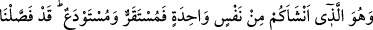
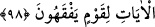

“açıkladık.” Çünkü onlardan istifade edenler onlardır.
98. O, sizi bir tek nefisten (Âdem’den) yaratandır. (Sizin için) bir kalma yeri, bir
de emanet olarak konulacağınız yer vardır. Anlayan bir toplum için âyetleri ayrıntılı
bir şekilde açıkladık.
“Sizi” bunca çokluğunuza rağmen “bir tek nefisten” Âdemden “yaratan O’dur.”
Çünkü Allah, hepimizi Âdem’den yaratmıştır. Anamız Havva’yı da Adem (a.s.) ın
kaburga kemiğinden yaratmıştır. Böylece bütün insanların aslı bir tek nefse dayanmış
olmaktadır. İsa (a.s.) da buna dâhildir. Çünkü o da anne-babasının sulblerinden
meydana gelen Meryem validemizden yaratılmıştır. Allah Teâlâ insanları tek bir nefisten
yaratmakla bize büyük bir iyilikte bulunmuştur. Çünkü insanlar neseb îtibariyle tek bir
asla bağlı olduklarından birbirleriyle ülfet etmeleri daha kolaydır.
İşaret ehli demişlerdir ki: Nasıl ki Allah Teâlâ ilk olarak Adem (a.s.)’ı yaratıp
evlâdlarını da ondan var etmişse Muhammed (s.a.)’in ruhunu da bütün ruhlardan önce
yaratmıştır. Nitekim Peygamberimiz “Allah’ın yarattığı ilk şey benim ruhumdur.”[143]
buyurmaktadır. Daha sonra diğer ruhları, Muhammed (s.a.)’in ruhundan yaratmıştır.
Beşerin babası Adem (a.s.), ruhların babası ise Muhammed (s.a.)’dir. “Sizi bir tek
nefisden yaratan O’dur” ayeti buna işaret eder.
“Sizin için bir karar yeri, bir de emânet yeri vardır.”
Yani, siz bir süre babalarınızın sulblerinde veya yeryüzünde duracak (istikrar), sonra
da bir emanet olarak annenizin rahminde veya toprağın altında kalacaksınız. Allah
Teâlâ, babanın belini nutfe için bir kalış yeri, annenin rahmini ise geçici bir emanet yeri
kılmıştır. Çünkü nutfe bizzat babanın belinde hasıl olmakta, başkasının tesiri
olmamaktadır. Nutfenin anne rahmine gelişi ise başkasının fiilidir. Bu yüzden emanete
benzetilmiştir. Sanki baba yanında devamlı bulunan bir şeyi anneye emanet vermiş
gibidir.
Hasan (rh.a.): “Ey Ademoğlu, sen ailenin yanında bir emanetsin. Yakında sahibine
ulaşırsın.” demiş ve Lebîd’in şu şiirini okumuştur :
Mal ve aile ancak birer emanettir.
Emanetlerin ise bir gün geri verilmesi zorunludur.
Kalp de emanetlerdendir. Saib demiştir ki:
Seni gönül cevherine emanetçi yapmışlar